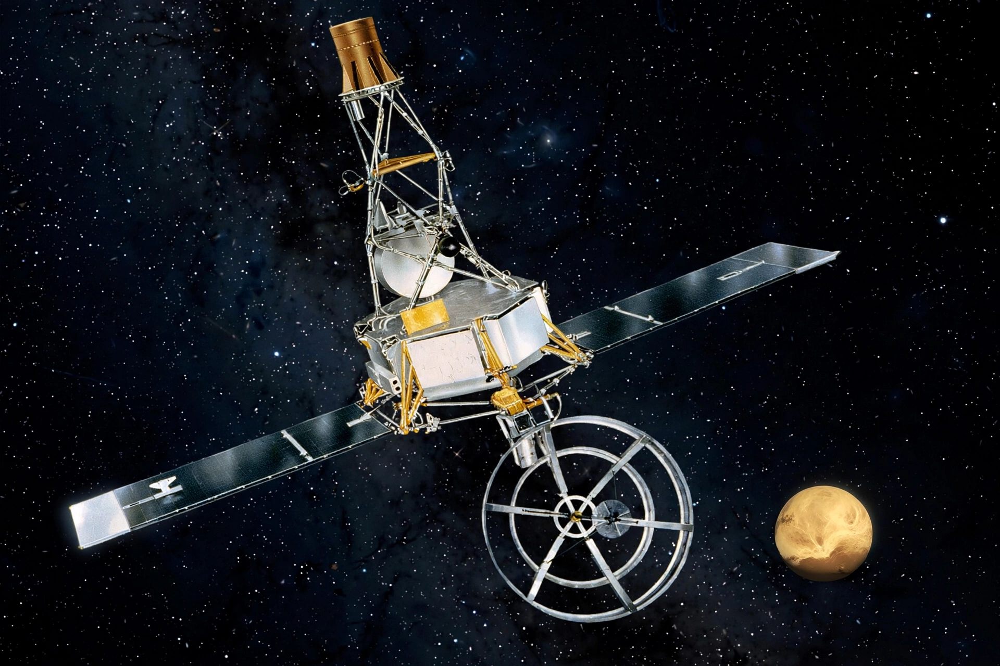

Mariner 2 was an American space probe launched by NASA on 27 August 1962 to Venus. It was the first robotic space probe to conduct a successful planetary encounter, flying by Venus on 14 December 1962.

| Operator | NASA / JPL |
|---|---|
| Launch | 27 August 1962 |
| Venus flyby | 14 December 1962 |
Based on the Ranger lunar block, the 203 kg probe carried microwave and infrared radiometers, magnetometer, and particle detectors. Its flyby at about 34,773 km measured Venus's surface temperature at roughly 425 °C, found no significant magnetic field, and measured the solar wind en route.
Mariner 2 proved interplanetary flight and deep-space communication, opening the Mariner programme to Mercury, Mars, and beyond.